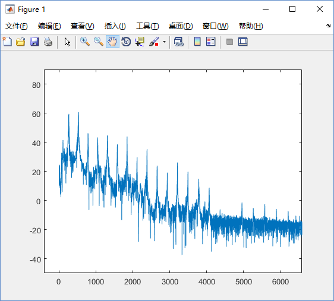
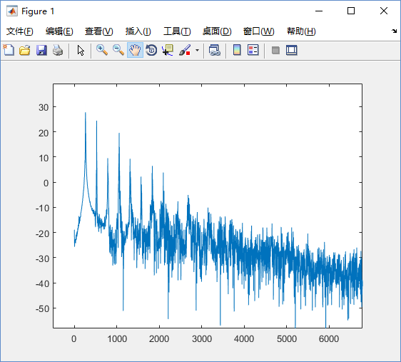
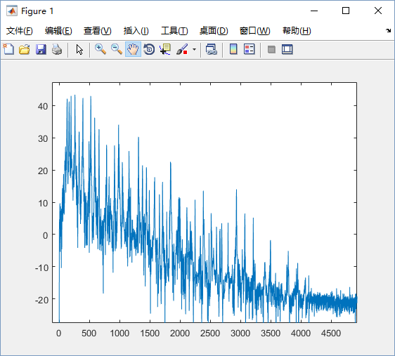
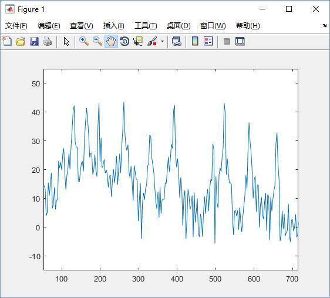
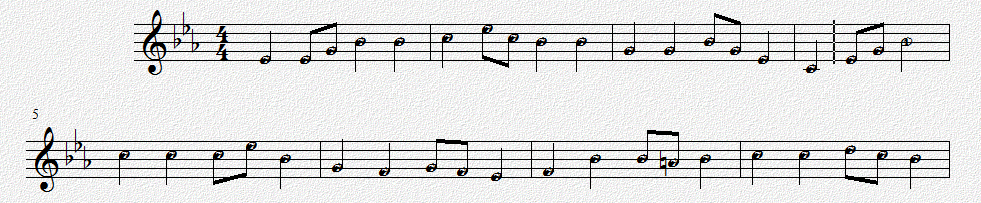

信号与系统小论文 2016.6.23
王旭康 2014011570
张蔚桐
给出一段钢琴（或其他乐器）的录音，通过频域分析给出乐谱。
基波决定音高，谐波决定音色。
不同乐器发出同一个音高，声音是有区别的。在时域上看，乐器的声音有不同的波形。在频域上看，乐器声音的高次谐波有着不同特性。
实际上，谐波关系决定了乐器的音色； 而 基波频率 决定音符的音高。
对不同乐器的单个音符的音频进行傅里叶变换后，即可看到基波和众多高次谐波的关系：

图中纵坐标是已经取过对数的频率强度，横坐标是频率的值。高频部分的幅值都很低，已经舍弃。
钢琴的频谱上，可以清晰的看到15次谐波峰(15*262Hz=3.93kHz)；每个谐波峰所对应的频率都是基频的整数倍。

而竖笛的音色与钢琴有明显的不同：低频段（基波部分）更加光滑；谐波峰可以观察到7阶(7*262Hz=1.83kHz)。
从图中也可以看出，高次谐波的强度很有可能比基波 大，因此单纯通过频域强度判断基波位置是不可行的。 为了准确判断基波位置，我们要合理的利用谐波与基波之间的频率倍数关系。
基波频率的取值是离散的。
为了乐器之间配合的需要，并不是所有基波频率都可能出现在乐曲中。
以标准中音A5为440Hz作为标准，每个八度音符之间的频率关系为2倍。而八度音符之间共有12个半音，每两个半音之间的频率倍数关系是相同的；因此每两个半音之间的频率都是 2 ^ (1/12) = 1.06 倍。
那么以普通人声歌唱的基频为例：普通男声的音域一般为小字一组c1到小字二组d2，也就是歌唱时基频的范围为262Hz~587Hz。
鉴别低音的难点：被采样点个数限制的FFT最小分辨频率
为了区分乐谱中音符的最小相隔单位半音，我们考查c1和c1#，这2个音符的基频分别为262Hz和277Hz，间隔为15Hz。因此，如果要将普通男声识别为音符，并准确区分2个半音，频域变换的精度要达到7.5Hz以上，否则无法找到相邻的2个波峰。
钢琴的音域更加宽广，基频的范围是27Hz到4.186kHz。如果想要准确判断最低的两个音（27.500Hz和29.135Hz），频域变换的精度就要达到0.81Hz。这也意味着这些低音要延续较长的时间才可能被准确检测出来。
本次测试使用的音频采样频率为44.1kHz（CD常用采样频率，大约是20kHz的奈奎斯特频率），使用FFT的采样点个数为16384个，一组采样时长为16384/44.1kHz=0.37152s，因此相邻频率点间隔为2.69Hz，至少可以分辨相距5.38Hz以上的波峰。
而测试使用的音频中，已经限制了音符的范围，即只使用基频110Hz~880Hz段的音符；最难分辨的半音频率分别为110.00Hz和116.54Hz，相隔6.54Hz，刚好可以分辨。
鉴别高音的难点：谐波分量干扰
当两个音符同时奏响的时候（乐理上称为和弦），低音的各个谐波分量会穿插在高音频段，很大程度上干扰了高音的鉴别。
以上2个谐波的强度强，又发生在其他音符的基频上，因此会对高音的鉴别产生非常大的影响。
给出一个常见的和弦例子，乐曲中的基频分别为130.813Hz(c)，164.814Hz(e)，195.998Hz(g)，261.626Hz(c1)

这个波形相当于是4个等差数列的混合，看起来自然非常的混乱。
几个音符的关键谐波位置：
对应的低频部分：

几个突出的峰分别为
和弦动听的关键就在于不同音符的高次谐波相互共振。不过这一点为和弦音符的分析带来了极大的困难。
保证一次FFT处理的数据里不会先后出现2个音符。
如果对时间上相继出现的两个音符 同时做频域变换，两个音符的频谱自然会出现重叠。因此音符分离也是很重要的。
由于整个乐曲的音符分布有周期性，所以可以先求整个乐曲能量的时域分布，然后提取乐曲能量波动的周期。典型乐曲大约是每分钟60拍到144拍，也就是1Hz到2.4Hz。这个方法要求乐曲的节拍和音符的分布非常稳定。
此外也可以考虑使用针对能量的反卷积方法。首先提取乐谱能量上的时域分布，然后使用单个音符的能量在时域上的分布进行反卷积，就可以获得脉冲序列，而这些脉冲序列所在的位置就是音符的位置。注意，这个方法要求每个音符的能量在时域上的分布都是相同的，因此只能识别一个乐器。
节拍上的测定难度较大，为了简化实现，我们已经将测试乐曲的频率调整到了合适的节拍。一分钟80.75个四分音符，就是说一个八分音符的持续时间为 60s / 80.75 / 2 = 0.3715s，刚好是FFT所截取的一帧的长度。
最基本的实现；此方案已经完成。
所有处理在MATLAB中进行。MATLAB读入wav音频文件，将其分为多个固定长度(16394/44.1kHz=0.37s)的帧，然后分别进行FFT并进行频域上的分析。
由于一帧中只会出现一个音符，因此所有的波峰都是基波的倍数，所以检测到任何一个波峰，都可以快速找到基波的位置。
具体的，先找到频谱中幅度的最大值所在位置。幅度最大的频率不一定是基频，但是一定是基频的倍数。所以向下检查这个频率的“基波”是否存在，即此频率的1/2,1/3等处的幅度是否也较高。如果在向下查找中找到了更好的频率，则确认之为基频。
最后将每一帧的数据汇总起来，再进行一次修订。 最后可以打印出乐曲的简谱。
以下测试用歌曲为校歌。
实际用乐谱：

运行示例：
D4# D4# D4# G4 A4# A4# A4# A4# C5 C5 D5# C5 A4# A4# A4# A4#
G4 G4 G4 G4 A4# G4 D4# D4# C4 C4 D4# G4 A4# A4# A4# A4#
C5 C5 C5 C5 C5 D5# A4# A4# G4 G4 F4 F4 G4 F4 D4# D4#
F4 F4 A4# A4# A4# A4 A4 A4# C5 C5 C5 C5 D5 C5 A4# A4#
A4# A4# ??? ??? D4#
1=D4#
1 1 1 3 5 5 5 5 6 6 ^1 6 5 5 5 5
3 3 3 3 5 3 1 1 _6 _6 1 3 5 5 5 5
6 6 6 6 6 ^1 5 5 3 3 2 2 3 2 1 1
2 2 5 5 5 4 4 5 6 6 6 6 7 6 5 5
5 5 ?? ?? 1
MATLAB源码：
% 将wav文件转化为音符
% 王旭康，2016.5.27
% 适用Matlab2014以上
%将乐曲分帧，分别进行傅里叶变换
%以取样频率 f0=44100Hz 计算
%一帧包含16384个数据时，即持续0.372s；频率精度为2.69Hz
%此文件进行的是但音符识别，取得最大幅度对应的频率，再向下查找2~4倍找到基频
[SIGNAL,FREQ]=audioread('D:\MyMusic\Overture\school_song\school_song_single_Eb.wav'); %读入wav文件
LEN=16384; %傅里叶变换取样长度，即一帧包含的数据量
MAXF=440; %最高识别频率
MINA=10; %最低响度
FREQ_LIST=linspace(0,FREQ/2,LEN/2); %获得0到fs/2, 共l/2个数字的等差数列
n=int32(length(SIGNAL)/LEN); %总帧数
notes_list = zeros(1, n);
freqs_list = zeros(1, n);
maxA_list = zeros(1, n); %最大响度
MAX_FREQ=int32(LEN/FREQ*MAXF*2); %最高识别频率对应的个数
key=['G3 ';'G3#';'A3 ';'A3#';'B3 '];
key=[key;'C4 ';'C4#';'D4 ';'D4#';'E4 ';'F4 ';'F4#';'G4 ';'G4#';'A4 ';'A4#';'B4 '];
key=[key;'C5 ';'C5#';'D5 ';'D5#';'E5 ';'F5 ';'F5#';'G5 ';'G5#';'A5 ';'A5#';'B5 '];
key=[key;'C6 ';'C6#';'D6 ';'D6#';'E6 ';'F6 ';'F6#';'G6 ';'G6#';'A6 ';'A6#';'B6 '];
%分段进行傅里叶分析
for i = 1:n,
lX = fft( SIGNAL( (i-1)*LEN+1 : i*LEN ) ); %截取长度为l的一段数据的快速傅里叶变换
lX_cut = lX(1:MAX_FREQ); %高频截止
lA = sqrt(lX_cut.*conj(lX_cut)); %取模
if lA > 0
lA = 20*log10(lA); %dB
end
maxA_list(i) = max(lA); %最大响度
max_index = find(lA==maxA_list(i), 1 );
best_index = max_index;
for mult=2:4,
if (lA(int32(max_index/mult)) > maxA_list(i)*0.7)
best_index = int32(max_index/mult);
end
end
freqs_list(i) = FREQ_LIST( best_index ); %最优响度对应的频率
notes_list(i) = log(freqs_list(i)/220) / log(2) * 12 + 3; %计算音高
%mm(i,1)=freqs_list(i);
%mm(i,2)=notes_list(i);
%mm(i,3)=maxA_list(i);
if maxA_list(i)<MINA || notes_list(i)<-12
notes_list(i)=NaN;
end
end
for i = 1:n,
if maxA_list(i)<MINA || notes_list(i)<-12
notes_list(i)=NaN;
end
%mm(i,2)=t(i);
%mm(i,3)=maxY(i);
end
K=[0,0,0,0,0,0,0,0,0,0,0,0]; %定调
%输出原乐谱
for i=1:n,
%try
if notes_list(i)==notes_list(i) % not NaN
p = round(notes_list(i));
if p>0
for j = 1:3
fprintf('%c',key(p,j));
end
else
fprintf('%d ',p);
end
fprintf(' ');
K(mod(p-1,12)+1)=K(mod(p-1,12)+1)+1;
else
fprintf('??? ');
end
%catch
% fprintf('\nAn error catched!');
%end
if mod(i,16)==0
fprintf('\n');
end
end
h7=[0,2,4,5,7,9,11];
w7=[3,2,3,1,3,3,1];
maxSc=0; % 用于统计定调
bestMc=6;
for mc=6:17,
sc=0;
for i=1:length(h7)
sc=sc+K(mod(mc+h7(i)-1,12)+1)*w7(i);
end
if maxSc<sc
maxSc=sc;
bestMc=mc;
end
end
%输出修订乐谱
fprintf('\n1=');
for j=1:3
fprintf('%c',key(bestMc,j));
end
fprintf('\n');
for i=1:n,
try
if notes_list(i)==notes_list(i)
p=notes_list(i);
p=p-bestMc;
while p<-0.5
fprintf('_');
p=p+12;
end
while p>=11.5
fprintf('^');
p=p-12;
end
if p<1
fprintf('1');
elseif p<3
fprintf('2');
elseif p<4.5
fprintf('3');
elseif p<6
fprintf('4');
elseif p<8
fprintf('5');
elseif p<10
fprintf('6');
else
fprintf('7');
end
fprintf('\t');
K(mod(p-1,12)+1)=K(mod(p-1,12)+1)+1;
else
fprintf('??\t');
end
catch
end
if mod(i,16)==0
fprintf('\n');
end
end
%for i=2:n-1,
% if (maxY(i)<maxY(i+1) | maxY(i)<maxY(i-1)) & t(i-1)==t(i+1)
% t(i)=t(i+1);
% end
%end
fprintf('\n');
subplot(2,2,1)
plot(notes_list)
subplot(2,2,3)
plot(SIGNAL)
subplot(2,2,2)
hist(notes_list)